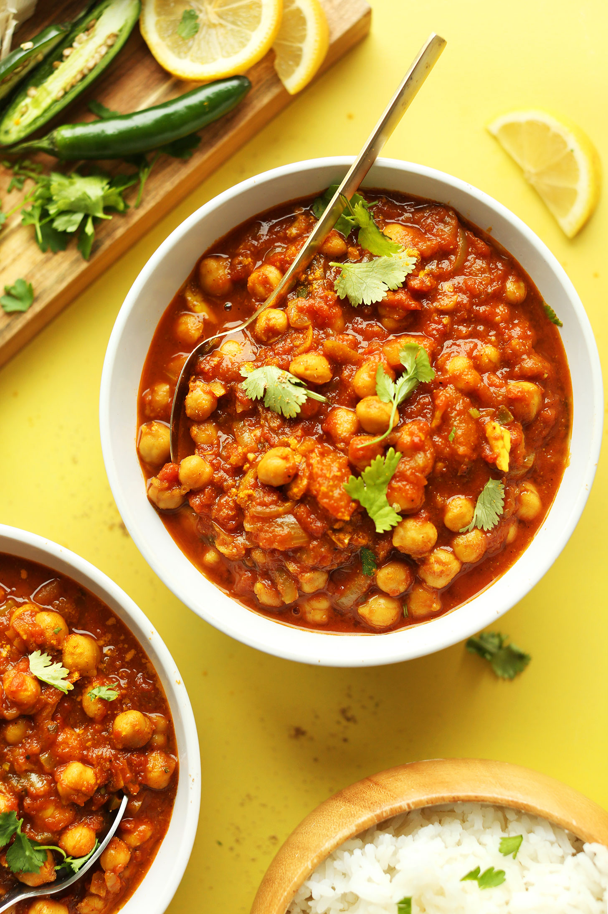

Popular Punjabi Dishes

Chana masala originated in northern India. “Chana” means chickpea and “masala” refers to a blend of spices

Dal Makhani id made with Whole Black Lentils and Kidney Beans
Paneer Bhurji is a Popular dish made with Paneer(cheese).